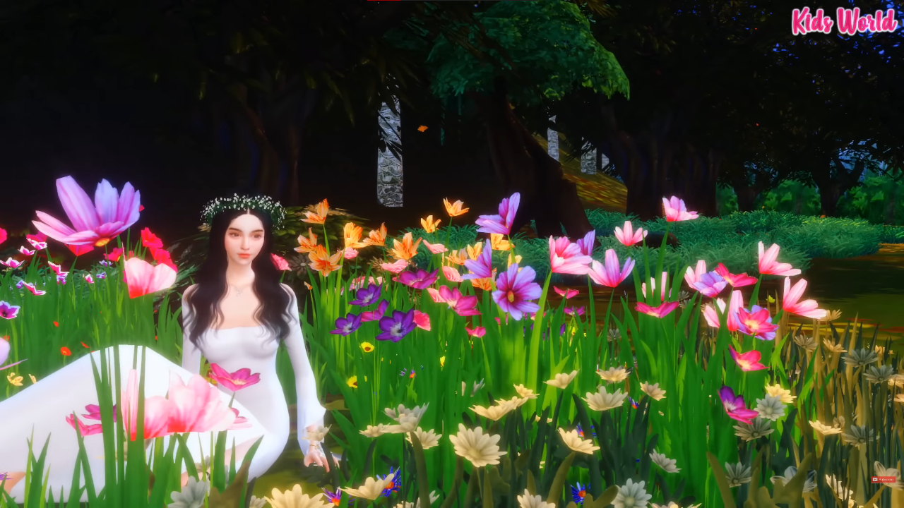

The Guardian of Mount Arayat
This digital storybook invites you into the legend of Mariang Sinukuan, the mystical guardian of Mount Arayat, whose presence has long been woven into the mountains, forests, and quiet whispers of the land. Passed down through generations, her story reflects a time when nature was revered, when spirits watched over the earth, and when beauty and danger walked side by side. As you scroll through this portal, you will uncover a tale shaped by enchantment and power—one that speaks of ancient promises, human curiosity, and the delicate balance between mankind and the natural world. Rooted deeply in Philippine folklore, this legend endures as a reminder that the land remembers those who respect it, and those who do not. Enter with wonder, and allow the echoes of the past to guide you through a story that has lived on far beyond its telling.
